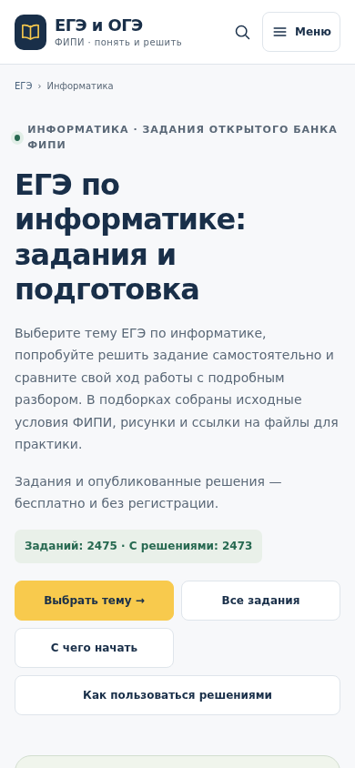
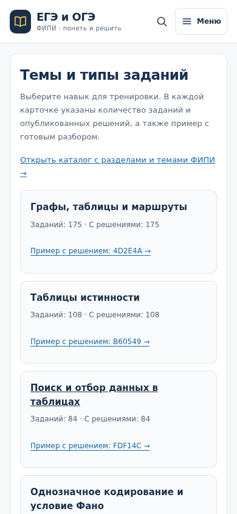

Опубликовано 13 ноября 2026 года в 03:31:31 МСК: /ege/informatics. Используется общий renderExamPage и тот же набор стилей, что у /ege/math и /ege/physics. Новый обзор содержит вводный экран, план подготовки, карточки 33 учебных типов, примеры с опубликованными решениями, инструкцию и предметный FAQ. Ссылка на официальные материалы ФИПИ проверена при подготовке текста.
| Уровень | URL | Назначение |
|---|---|---|
| Предмет | /ege/informatics | Обзор и выбор направления подготовки |
| Каталог | /ege-informatics | Все существующие типы и темы банка |
| Тема | /ege-informatics?topic=type.graph-models | Подборка заданий с пагинацией |
| Задание | /tasks/EGEINF4D2E4A | Условие, ответ, разбор и переходы |
Счётчики банка и каждой карточки считаются по действующему каталогу и опубликованным ID SQLite: 2475 заданий, 2473 разбора. Два задания EGEINF1F25B2/EGEINF7F1EAA остаются без опубликованного решения. Экзаменационные части математики/физики не перенесены на информатику: использованы её реальные учебные группы.
Обновлены переходы с /ege, общие ссылки меню/первого экрана/FAQ/подвала и хлебные крошки информатики. Существующие каталоги, темы и задания сохраняют адреса, title/description/canonical/robots и исходный учебный материал. Новый обзор имеет собственные canonical и CollectionPage + ItemList + BreadcrumbList; в sitemap добавлен один URL, прежние 16334 сохранены. В форме нового обзора выбран предмет «Информатика»; тестовые обращения не отправлялись. Общий счётчик решений трёх предметов на /ege теперь включает информатику.
Проверки: 54 модульных теста; полный аудит трёх предметных обзоров — 78 карточек/подборок с обходом всех страниц и 78 примеров с проверкой API/SSR. Через карточки доступны все 1148 заданий математики, 2344 физики и 2475 информатики. В предпросмотре проверены 22 прежних маршрута и три маршрутных случая; Chrome — 19 отображений на 320/390/1024/1280 px, два сценария переходов и вариант без JavaScript. Публично повторены 22 прежних маршрута, три маршрутных случая, девять браузерных вариантов и один сценарий «ЕГЭ → обзор → тема → задача → обзор → пример с решением». Один init счётчика на документ, одна цель solution_open при переходе к примеру. Все 12940 строк solutions совпали с исходным снимком по SHA-256.
Браузеры работали в Linux с эмуляцией телефона; физический iPhone не проверялся. Внешняя реклама и Метрика, а также все запросы записи блокировались. Техническая работа структуры проверена; улучшение поисковых позиций или трафика пока не установлено. После публикации при анализе информатики необходимо учитывать новый /ege/informatics вместе с прежними каталогами и префиксами задач.


Настольный экран · Сводка · Аудит трёх предметов · Публичные сценарии · Прежние адреса